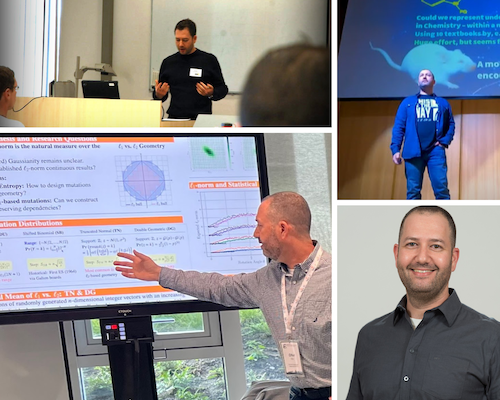

Publications
Journal articles, peer-reviewed conference papers, books and chapters, newest first. Citation counts live on Google Scholar; the record is mirrored on ORCID and the ACM Digital Library.

Nothing matches that search. Try a co-author's surname or a venue such as GECCO.
2026
-
All-Quadratic Mixed-Integer Problems: A Study on Evolution Strategies and Mathematical Programming
-
Physics-Guided Inverse Regression for Crop Quality Assessment
-
Integer Natural Evolution Strategies
-
Minor Embedding for Max-Cut: Empirical Analysis of Quantum Annealing's Combinatorial Bottleneck
-
Evolution Strategies' Genetic Operators Revisited Over Integer Search-Spaces
2025
-
Multi-Objective Mixed-Integer Quadratic Models: A Study on Mathematical Programming and Evolutionary Computation
-
Foundations of Correlated Mutations for Integer Programming
-
Correlated Geometric Mutations for Integer Evolution Strategies
-
Evolution Strategies
2024
-
Avoiding Redundant Restarts in Multimodal Global Optimization
2023
-
On the Behavior of the Mixed-Integer SMS-EMOA on Box-Constrained Quadratic Bi-Objective Models
2022
2021
-
Multi-level evolution strategies for high-resolution black-box control
-
The Unreasonable Effectiveness of the Final Batch Normalization Layer
-
Locating the local minima in lens design with machine learning
-
Automated Feature Detection of Black-Box Continuous Search-Landscapes using Neural Image Recognition
-
Addressing the Multiplicity of Solutions in Optical Lens Design as a Niching Evolutionary Algorithms Computational Challenge
-
Improving Model Accuracy for Imbalanced Image Classification Tasks by Adding a Final Batch Normalization Layer: An Empirical Study
2020
2019
-
Predict or Screen Your Expensive Assay? DoE vs. Surrogates in Experimental Combinatorial Optimization
-
Statistical Learning in Soil Sampling Design Aided by Pareto Optimization
-
Bayesian Performance Analysis for Black-Box Optimization Benchmarking
-
Benchmarking Discrete Optimization Heuristics with IOHprofiler
2018
2017
-
Searching for the Pareto frontier in multi-objective protein design
-
Protein Design by Multiobjective Optimization: Evolutionary and Non-Evolutionary Approaches
-
Solving Structures of Pigment-Protein Complexes as Inverse Optimization Problems using Decomposition
-
On the Statistical Learning Ability of Evolution Strategies
2016
-
Genetic background and environmental conditions drive metabolic variation in wild type and transgenic soybean (Glycine max) seeds
-
Efficient Isothermal Titration Calorimetry Technique Identifies Direct Interaction of Small Molecule Inhibitors with the Target Protein
-
On the Capacity of Evolution Strategies to Statistically Learn the Landscape
-
Multilevel Evolution Strategies for Multigrid Problems
2015
-
Exploring the complexity of quantum control optimization trajectories
2014
2013
-
Pareto Optimization and Tradeoff Analysis Applied to Meta-Learning of Multiple Simulation Criteria
-
Self-Organizing Maps for Multi-Objective Pareto Frontiers
2012
2011
-
Control of Nitromethane Photoionization Efficiency with Shaped Femtosecond Pulses
-
Fidelity Between Unitary Operators and the Generation of Gates, Robust Against Off-Resonance Perturbations
-
Multiobjective Adaptive Feedback Control of Two-Photon Absorption Coupled with Propagation through a Dispersive Medium
-
Evolutionary Optimization of Rotational Population Transfer
2010
-
Adaptive Niche-Radii and Niche-Shapes Approaches for Niching with the CMA-ES
-
Forced Optimal Covariance Adaptive Learning: Modified CMA-ES for Efficient Hessian Determination
-
A Reduced-Cost SMS-EMOA Using Kriging, Self-Adaptation, and Parallelization
2009
-
Accelerated Optimization and Automated Discovery with Covariance Matrix Adaptation for Experimental Quantum Control
-
Optimization of Laser Field-Free Orientation of a State-Selected NO Molecular Sample
-
Niching with Derandomized Evolution Strategies in Artificial and Real-World Landscapes
-
Evolutionary Multi-Objective Quantum Control Experiments with the Covariance Matrix Adaptation
-
Enhancing Decision Space Diversity in Evolutionary Multiobjective Algorithms
-
Niching Methods: Speciation Theory Applied for Multimodal Function Optimization
2008
-
On the Diversity of Multiple Optimal Controls for Quantum Systems
-
Evolutionary Algorithms for Real-World Applications [Application Notes]
-
Control of Quantum Dynamics by Optimized Measurements
-
Niche Radius Adaptation with Asymmetric Sharing
-
Mixed-Integer Evolution Strategies with Dynamic Niching
-
Performance Analysis of Derandomized Evolution Strategies in Quantum Control Experiments
-
On the Evolution of Laser Pulses under a Dynamic Quantum Control Environment
-
Conceptual Designs in Laser Pulse Shaping Obtained by Niching in Evolution Strategies
-
Niching in Derandomized Evolution Strategies and its Applications in Quantum Control: A Journey from Organic Diversity to Conceptual Quantum Designs
2007
-
Self-Adaptive Niching CMA-ES with Mahalanobis Metric
-
The Application of Evolutionary Multi-Criteria Optimization to Dynamic Molecular Alignment
-
Gaining Insight into Laser Pulse Shaping by Evolution Strategies
-
On the Scalability of Evolution Strategies in the Optimization of Dynamic Molecular Alignment
-
The Second Harmonic Generation Case Study as a Gateway for ES to Quantum Control Problems
-
Performance Analysis of Niching Algorithms Based on Derandomized ES Variants
-
Classification of Cell Fates with Support Vector Machine Learning
2006
-
Evolutionary Algorithms in the Optimization of Dynamic Molecular Alignment
-
Learning the Complete-Basis-Functions Parameterization for the Optimization of Dynamic Molecular Alignment by ES
-
Niche Radius Adaptation in the CMA-ES Niching Algorithm
-
Evolutionary Algorithms in the Optimization of Dynamic Molecular Alignment
-
The Complete-Basis-Functions Parameterization in ES and its Application to Laser Pulse Shaping
-
Niching in Evolution Strategies and its Application to Laser Pulse Shaping
2005
-
Dynamic Niching in Evolution Strategies with Covariance Matrix Adaptation
-
Niching in Evolution Strategies
Patents
-
Multi objective design selection
-
Automated multi-objective solution selection
-
Objective weighing and ranking
-
Self organizing maps for visualizing an objective space
-
Leak detection in a fluid distribution network
-
Multiobjective optimization through user interactive navigation in a design space
-
Sensor placement for leakage location in liquid distribution networks
-
Identifying a highly diverse set of multi objective designs